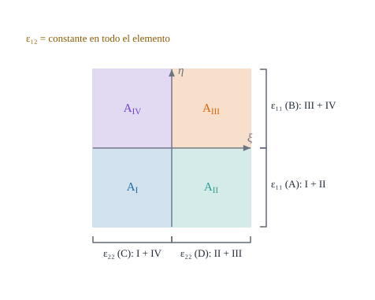

La formulación específica del elemento: tres campos, cuatro subdominios y una matriz de rigidez en forma cerrada

Figura 28.1: Los cuatro subdominios \(A_{\mathrm I}\dots A_{\mathrm{IV}}\) del elemento y las regiones donde cada deformación toma un valor propio: \(\varepsilon_{11}\) distingue las mitades \(\eta<0\) y \(\eta>0\), \(\varepsilon_{22}\) las mitades \(\xi<0\) y \(\xi>0\), y \(\varepsilon_{12}\) es única. Lo mismo vale para \(\kappa\) y \(\gamma\). Esquema ilustrativo.
Cómo se obtiene, a partir de un principio con tres campos independientes, una matriz de rigidez que sólo depende de los desplazamientos
Objetivos y prerrequisitos
Objetivos. Al terminar el tema sabrás:
escribir el funcional de Hu–Washizu específico del elemento, con \(\boldsymbol\delta\), \(\hat{\boldsymbol\varepsilon}\) y las resultantes \(\mathbf N,\mathbf M,\mathbf Q\) por subdominios;
obtener, variando cada campo, las tres ecuaciones y la condensación que deja \(\mathbf K=\mathbf E^{\mathsf T}\mathbf A^{-1}\bar{\mathbf D}\mathbf A^{-1}\mathbf E\);
construir las matrices \(\mathbf E\) (con áreas), \(\mathbf A\) y \(\bar{\mathbf D}\) y leer su estructura de ceros;
explicar qué diferencia a esta versión de la genérica del tema D8;
comprobar que \(\mathbf K\) es simétrica, semidefinida y no más rígida que la de desplazamientos.
NotaExplicación para ingenieros: tres actores y un juez
Hay tres actores: los desplazamientos de los nodos (lo que realmente se mueve), las deformaciones de cada cuadrante (lo que «dice» el material que se ha deformado) y las tensiones de cada cuadrante (lo que «dice» que se carga). El principio de Hu–Washizu es el juez que exige tres acuerdos: (i) la deformación media de cada cuadrante debe coincidir con la que calculan los desplazamientos; (ii) la tensión del cuadrante debe ser la que corresponde a su deformación según el material; (iii) las fuerzas en los nodos deben equilibrar las tensiones. Una vez firmados los tres acuerdos, los dos actores extra se eliminan y sólo queda una matriz \(\mathbf K\) entre fuerzas y desplazamientos: la del elemento.
28.1 El funcional específico
En el tema D8 se vio la versión genérica, \(\Pi_{HW}(\mathbf u,\boldsymbol\varepsilon,\boldsymbol\sigma)=\int[W(\boldsymbol\varepsilon)+\boldsymbol\sigma:(\varepsilon(\mathbf u)-\boldsymbol\varepsilon)]\,dV\). Para el elemento de lámina se discretiza por familias (extensión, flexión y cortante) y por regiones, con \(\mathbf u\) interpolado con \(N_k\), \(\hat{\boldsymbol\varepsilon}\) por subdominios y la resultante con la misma partición:
Definición 28.1 (Hu–Washizu por subdominios del elemento de lámina) Para cada familia \(f\in\{E,B,S\}\) (con \(\hat{\mathbf e}_E=\hat{\boldsymbol\varepsilon}\), \(\hat{\mathbf e}_B=\hat{\boldsymbol\kappa}\), \(\hat{\mathbf e}_S=\hat{\boldsymbol\gamma}\) y \(\mathbf S_E=\mathbf N\), \(\mathbf S_B=\mathbf M\), \(\mathbf S_S=\mathbf Q\)), \[
\Pi=\sum_{f}\Bigl[\tfrac12\,\hat{\mathbf e}_f^{\mathsf T}\bar{\mathbf D}_f\,\hat{\mathbf e}_f+\mathbf S_f^{\mathsf T}\bigl(\mathbf G_f\,\boldsymbol\delta-\mathbf A_f\,\hat{\mathbf e}_f\bigr)\Bigr]-\boldsymbol\delta^{\mathsf T}\mathbf F ,
\tag{28.1}\] con \(\mathbf G_E=\mathbf E\), \(\mathbf G_B=\mathbf B\) y \(\mathbf G_S=\mathbf G\) las matrices de ecuación 28.4, y \(\mathbf F\) el vector de cargas nodales.
El primer término es la energía de deformación con la rigidez integrada por regiones; el segundo, el multiplicador que obliga a que la deformación promediada de los desplazamientos, \(\mathbf G_f\boldsymbol\delta\), coincida con la de los escalones, \(\mathbf A_f\hat{\mathbf e}_f\) (la proyección ecuación 27.3 del tema E6). El último es el trabajo de las cargas.
28.2 Variar los tres campos
Para cada familia, la estacionariedad de ecuación 28.1 respecto de cada campo da:
Son exactamente las tres ecuaciones que el tema D8 asignaba a cada campo. Eliminando \(\hat{\mathbf e}_f=\mathbf A_f^{-1}\mathbf G_f\boldsymbol\delta\) y \(\mathbf S_f=\mathbf A_f^{-1}\bar{\mathbf D}_f\hat{\mathbf e}_f\) (condensación estática):
Proposición 28.1 (Matriz de rigidez del elemento)\[
\mathbf K=\sum_{f\in\{E,B,S\}}\mathbf G_f^{\mathsf T}\,\mathbf A_f^{-1}\,\bar{\mathbf D}_f\,\mathbf A_f^{-1}\,\mathbf G_f,\qquad \mathbf K\,\boldsymbol\delta=\mathbf F .
\tag{28.3}\]
De la primera ecuación de ecuación 28.2, \(\hat{\mathbf e}_f=\mathbf A_f^{-1}\mathbf G_f\boldsymbol\delta\). De la segunda, \(\mathbf S_f=\mathbf A_f^{-1}\bar{\mathbf D}_f\hat{\mathbf e}_f=\mathbf A_f^{-1}\bar{\mathbf D}_f\mathbf A_f^{-1}\mathbf G_f\boldsymbol\delta\). Sustituyendo en el equilibrio, \(\sum_f\mathbf G_f^{\mathsf T}\mathbf S_f=\bigl[\sum_f\mathbf G_f^{\mathsf T}\mathbf A_f^{-1}\bar{\mathbf D}_f\mathbf A_f^{-1}\mathbf G_f\bigr]\boldsymbol\delta=\mathbf F\). (\(\mathbf A_f\) es diagonal con áreas positivas, luego invertible.) \(\blacksquare\)
Ejemplo 28.1 (Ejemplo resuelto: un estiramiento uniforme) Cuadrado unidad plano, \(E=1\), \(\nu=0\), \(t=1\), con el campo \(u_1=0{,}01\,x\) (el resto, nulo). La deformación real es \(\varepsilon_{11}=0{,}01\) constante y todas las demás, nulas. Escalones:\(\hat\varepsilon^A=\hat\varepsilon^B=0{,}01\) (media de una constante), \(\hat\varepsilon^C=\hat\varepsilon^D=\hat\varepsilon_{12}=0\). Tensión: con \(\nu=0\), \(N^A=N^B=E\,t\cdot0{,}01=0{,}01\) y las demás, nulas. Energía:\(U=\tfrac12\boldsymbol\delta^{\mathsf T}\mathbf K\boldsymbol\delta=\tfrac12\bigl(N^A\hat\varepsilon^AA_{\mathrm{I+II}}+N^B\hat\varepsilon^BA_{\mathrm{III+IV}}\bigr)=\tfrac12\cdot0{,}01\cdot0{,}01\cdot(0{,}5+0{,}5)=\mathbf{5\cdot10^{-5}}\). Es el mismo valor que da \(\tfrac12EtA\varepsilon_{11}^2\) (el campo es constante, no hay nada que promediar). Resultado analítico; la práctica lo recalcula con la matriz \(\mathbf K\).
En el Ejemplo 28.1, ¿cuánto vale la energía de deformación \(U=\tfrac12\boldsymbol\delta^{\mathsf T}\mathbf K\boldsymbol\delta\) del cuadrado unidad (\(E=1\), \(\nu=0\), \(t=1\)) con \(u_1=0{,}01x\)?
28.3 Las matrices \(\mathbf E\), \(\mathbf A\) y \(\bar{\mathbf D}\)
Las matrices de ecuación 28.3 son integrales por regiones de lo que ya se conoce. Para la extensión (las de flexión y cortante son análogas, con \(\mathbf H_B,\mathbf H_S\) y \(\mathbf C_B,\mathbf C_S\)):
La matriz \(\bar{\mathbf D}\) es simétrica, \(5\times5\) (extensión y flexión) o \(4\times4\) (cortante), con la rigidez \(\mathbf C(\theta)=\mathbf C_E\) integrada sobre la intersección de las regiones de cada par de deformaciones:
\(\varepsilon^A\)
\(\varepsilon^B\)
\(\varepsilon^C\)
\(\varepsilon^D\)
\(\varepsilon_{12}\)
\(\varepsilon^A\)
\(\int_{\mathrm{I+II}}C_{11}\)
0
\(\int_{\mathrm I}C_{12}\)
\(\int_{\mathrm{II}}C_{12}\)
\(\int_{\mathrm{I+II}}C_{13}\)
\(\varepsilon^B\)
\(\int_{\mathrm{III+IV}}C_{11}\)
\(\int_{\mathrm{IV}}C_{12}\)
\(\int_{\mathrm{III}}C_{12}\)
\(\int_{\mathrm{III+IV}}C_{13}\)
\(\varepsilon^C\)
\(\int_{\mathrm{I+IV}}C_{22}\)
0
\(\int_{\mathrm{I+IV}}C_{23}\)
\(\varepsilon^D\)
\(\int_{\mathrm{II+III}}C_{22}\)
\(\int_{\mathrm{II+III}}C_{23}\)
\(\varepsilon_{12}\)
\(\int_{A}C_{33}\)
Los dos ceros vienen de que \(\varepsilon^A\) y \(\varepsilon^B\) (mitades opuestas en \(\eta\)) no se solapan, igual que \(\varepsilon^C\) y \(\varepsilon^D\): en el producto \(\int\hat{\varepsilon}\,C\,\hat{\varepsilon}\,dA\) ese término nunca aparece. Como \(\mathbf C(\theta)\) puede variar dentro del elemento (espesor variable, material graduado), integrar por regiones lo recoge de forma consistente.
AdvertenciaDos puntos que suelen confundir
\(\mathbf D\) aquí no es la de tensión plana.\(\bar{\mathbf D}_f\) es la rigidez de la lámina de D7 (con \(t\), \(t^3/12\) y \(t\mu\)) integrada por regiones; incluye el área.
Las tensiones \(\mathbf N,\mathbf M,\mathbf Q\) son parámetros, no campos. Aparecen por escalones, uno por región, y se eliminan en ecuación 28.3; al final sólo quedan desplazamientos.
ecuación 28.1 es la genéricaecuación 21.5 del tema D8 con una elección: las deformaciones y las tensiones viven en el espacio de funciones constantes a trozos de los cuatro subdominios. Esa elección es la que hace que el multiplicador \(\mathbf S_f\) cuente como una media y desaparezca el cortante parásito (E4–E6).
28.5 Propiedades
\(\mathbf K\) es simétrica y semidefinida positiva (suma de formas cuadráticas con \(\bar{\mathbf D}_f\) definida positiva).
Con \(\mathbf C\) constante, \(\boldsymbol\delta^{\mathsf T}\mathbf K\boldsymbol\delta\le\boldsymbol\delta^{\mathsf T}\mathbf K_u\boldsymbol\delta\) siendo \(\mathbf K_u\) la de desplazamientos puros (desigualdad de Cauchy–Schwarz en cada región, ejercicio 2 de E6): el elemento no es más rígido que el de desplazamientos.
Sus autovalores nulos son los de sólido rígido (seis en el elemento plano, Figura 26.3).
En el elemento de lámina por subdominios, las resultantes \(\mathbf N,\mathbf M,\mathbf Q\) se interpolan con los mismos subdominios que las deformaciones.
Verdadero. Es lo que hace que el término \(\mathbf S_f^{\mathsf T}(\mathbf G_f\boldsymbol\delta-\mathbf A_f\hat{\mathbf e}_f)\) sea una suma de productos por áreas y que \(\mathbf K\) se obtenga en forma cerrada.
TipAplicación real: espesor variable y material graduado
ilustrativoObra civil. El casco de una torre de refrigeración de hormigón no tiene espesor constante: en el caso de una torre de 1959 estudiada por inspección láser, el espesor de proyecto va de unos 0,4 m junto a los pilares a 0,12 m a pocos metros de altura, y vuelve a engrosarse hacia el borde superior. Integrar la rigidez por regiones (la matriz \(\bar{\mathbf D}\)) recoge esa variación dentro del elemento. Biomecánica. Lo mismo vale para huesos o prótesis cuyo módulo de elasticidad varía de forma progresiva de la cortical a la esponjosa.
NotaUn poco de historia: tres nombres para un funcional
Como se contó en el tema D8, el funcional de tres campos se asocia con Hu Haichang (1954–1955) y Kyūichirō Washizu (1955), y hay quien añade a Fraeijs de Veubeke (1951), de modo que la literatura lo llama a veces Veubeke–Hu–Washizu. Su uso para construir elementos (y no sólo como resultado teórico) es el de los llamados elementos mixtos y de deformación mejorada: eliminan las deformaciones parásitas eligiendo el espacio de las deformaciones y las tensiones por separado del de los desplazamientos, que es justo lo que hace la formulación de este tema.
calculado (1) Se construye \(\mathbf K\)desde cero con las matrices \(\mathbf E\), \(\mathbf A\), \(\bar{\mathbf D}\) de ecuación 28.4 y se compara con rigidez_elemento(…; modo = :subdominios). (2) Se verifica el ejemplo de la energía y la desigualdad con la formulación de desplazamientos.
usingGeometria, LinearAlgebra, Randomplana =placa_oblicua(π/2); X = [0.0110; 0011]fila11 = (1, 1, 2, 2); fila22 = (3, 4, 4, 3) # región de ε₁₁ y de ε₂₂ en cada cuadrantefunctionk_desde_cero(r, X, E, ν, t) DE =zeros(5, 5); DB =zeros(5, 5); DS =zeros(4, 4) EE =zeros(5, 20); EB =zeros(5, 20); ES =zeros(4, 20); AN =zeros(5); AS =zeros(4)for q in1:4, (ξ, η, w) in Geometria.puntos_gauss(Geometria.CUADRANTES[q][1], Geometria.CUADRANTES[q][2], 2) g, N, dN, dA, CE, CB, CS =punto_elemento(r, X, ξ, η, E, ν, t) HE, HB, HS =matrices_H(g, N, dN) P =zeros(5, 3); P[fila11[q], 1] =1; P[fila22[q], 2] =1; P[5, 3] =1 PS =zeros(4, 2); PS[fila11[q], 1] =1; PS[fila22[q], 2] =1 s = w * dA DE += P * CE * P'* s; DB += P * CB * P'* s; DS += PS * CS * PS'* s EE += P * HE * s; EB += P * HB * s; ES += PS * HS * sfor j in (fila11[q], fila22[q], 5); AN[j] += s; endfor j in (fila11[q], fila22[q]); AS[j] += s; endend A =Diagonal(AN); As =Diagonal(AS) EE'* (A \ DE / A) * EE + EB'* (A \ DB / A) * EB + ES'* (As \ DS / As) * ESendK1 =k_desde_cero(plana, X, 1.0, 0.3, 0.1)K2 =rigidez_elemento(plana, X, 1.0, 0.3, 0.1; modo =:subdominios)(diferencia_relativa =norm(K1 - K2) /norm(K2), simétrica =norm(K2 - K2') <1e-12)
(diferencia_relativa = 0.0, simétrica = true)
# (2) Energía del estiramiento uniforme (ν = 0, E = t = 1): ½ δᵀ K δ = 5·10⁻⁵δ =zeros(20); for k in1:4; δ[5(k-1)+1] =0.01* X[1, k]; endK =rigidez_elemento(plana, X, 1.0, 0.0, 1.0)U = δ' * K * δ / 2# Cota: la rigidez por subdominios no supera a la de desplazamientos (membrana, ν = 0.3)Random.seed!(2); d =randn(20); d[[3, 4, 5, 8, 9, 10, 13, 14, 15, 18, 19, 20]] .=0# sólo g.d.l. de membranaKs =rigidez_elemento(plana, X, 1.0, 0.3, 1.0; modo =:subdominios)Ku =rigidez_elemento(plana, X, 1.0, 0.3, 1.0; modo =:desplazamientos)(U = U, esperada =5e-5, energía_subdominios = d'* Ks * d, energía_desplazamientos = d'* Ku * d)
Elementos con \(\mathbf C\) constante. Si \(\mathbf C\) es constante, ¿qué forma tiene \(\bar{\mathbf D}_E\) en la primera fila, columna de \(\varepsilon^C\)?
NotaSolución
\(\int_{A_{\mathrm I}}C_{12}\,dA=C_{12}A_{\mathrm I}\): la constante por el área del cuadrante común.
Simetría. ¿Por qué \(\mathbf K\) de ecuación 28.3 es simétrica?
NotaSolución
\(\mathbf A^{-1}\) y \(\bar{\mathbf D}\) son simétricas (la segunda por serlo \(\mathbf C\)): \((\mathbf G^{\mathsf T}\mathbf A^{-1}\bar{\mathbf D}\mathbf A^{-1}\mathbf G)^{\mathsf T}=\mathbf G^{\mathsf T}\mathbf A^{-1}\bar{\mathbf D}^{\mathsf T}\mathbf A^{-1}\mathbf G\).
Construyo \(\mathbf E\), \(\mathbf A\) y \(\bar{\mathbf D}\) y explico los ceros de \(\bar{\mathbf D}\).
Señalo en qué se diferencia de la versión genérica del tema D8.
Sé que \(\mathbf K\) es simétrica, semidefinida y no más rígida que la de desplazamientos.
NotaFuentes, correcciones y qué queda pendiente
Fuentes. Texto autónomo; el principio de Hu–Washizu como base de elementos mixtos es estándar (Bathe 1996; Hughes 1987; Zienkiewicz y Taylor, s. f.). La condensación y la igualdad numérica con la matriz de la librería se comprueban en Julia (diferencia relativa \(\approx10^{-16}\)).
Qué queda pendiente. La estructura de \(\bar{\mathbf D}\) se ha deducido aquí; el signo y el nombre de los multiplicadores siguen la convención de D8; la nota histórica y la «Aplicación real» emplean fuentes secundarias; revisión visual de la figura.
Zienkiewicz, O. C., y R. L. Taylor. s. f. The Finite Element Method. Butterworth-Heinemann.
Hughes, T. J. R. 1987. The Finite Element Method: Linear Static and Dynamic Finite Element Analysis. Prentice-Hall.
Bathe, K. J. 1996. Finite Element Procedures. Prentice Hall.
Referencias
Son las mismas que aparecen en el margen, junto al texto.
Bathe, K. J. 1996. Finite Element Procedures. Prentice Hall.
Hughes, T. J. R. 1987. The Finite Element Method: Linear Static and Dynamic Finite Element Analysis. Prentice-Hall.
Zienkiewicz, O. C., y R. L. Taylor. s. f. The Finite Element Method. Butterworth-Heinemann.